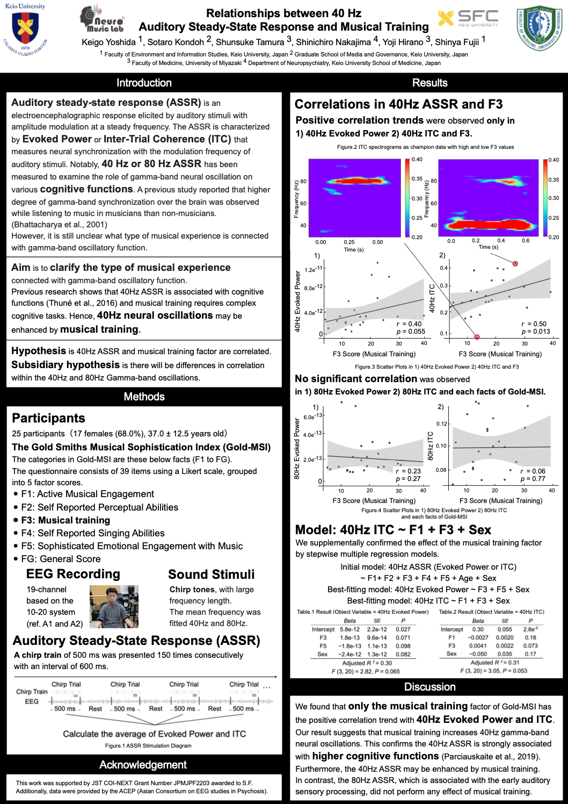

Relationships between 40-Hz Auditory Steady-State Response and Musical Training

| A science research poster, Relationships between 40-Hz Auditory Steady-State Response and Musical Training was presented at The Neurosciences and Music – VIII 2024 in Helsinki, Finland.
Keigo Yoshida Sotaro Kondoh Shunske Tamura Shinichiro Nakajima Yoji Hirano Shinya Fujii |
| Also Co-presenter of this presentation.
Fujii, S., Etani, T., Kondoh, S., Sakakibara, Y., Yoshida, K., Naruse, Y., Imamura, Y. Ibaraki, T. Enhanced groove sensation using a closed-loop brain-machine interface. The Neurosciences and Music VIII, Helsinki, Finland, 2024/6/13-16. |
